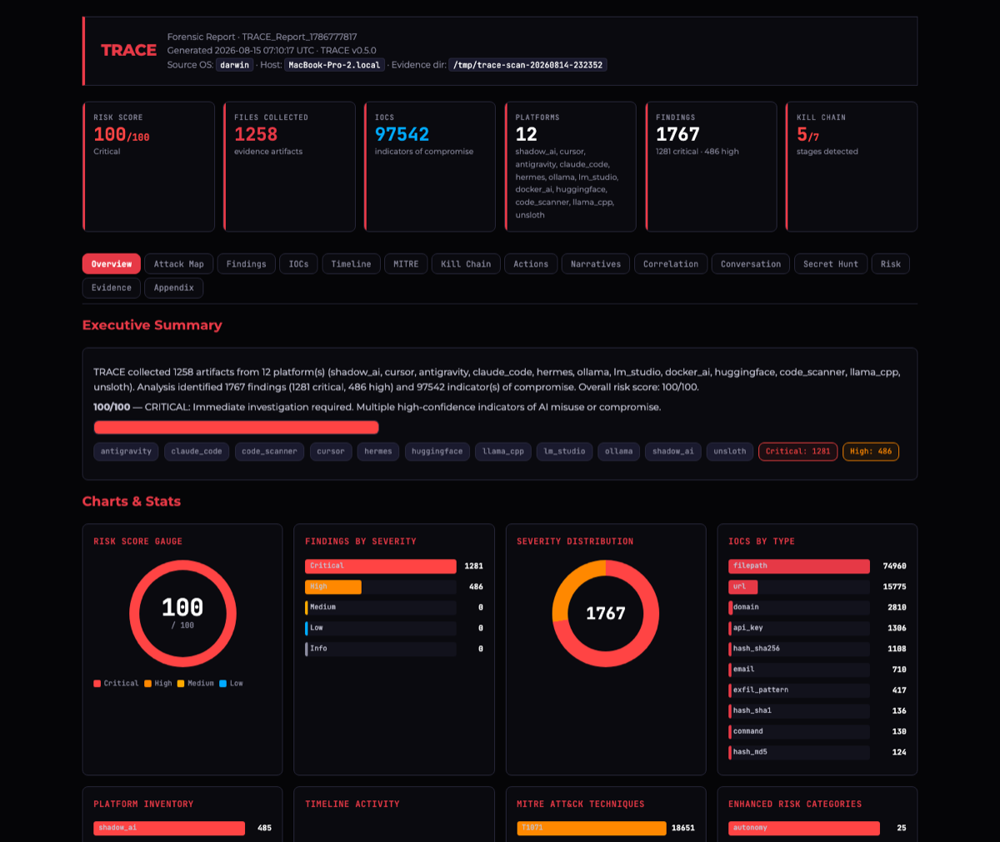

Credentials in cleartext
Provider keys sit unencrypted in editor state stores, cache directories and dotfiles — readable by any process running as that user, and pasted straight into chats.
Your endpoints are running AI tools nobody approved — holding plaintext provider keys, unbounded agent tooling, and conversations full of pasted secrets. TRACE collects that evidence forensically, analyzes it, and hands you a report you can put in a case file.
Read-only collection · SHA-256 per artifact · chain of custody · no agent, no server
It arrived through developers, not procurement. It reads your source, runs your shell, and talks to a vendor over TLS. When something goes wrong, there is no log to pull — the evidence sits in dotfiles, SQLite stores and session transcripts.
Provider keys sit unencrypted in editor state stores, cache directories and dotfiles — readable by any process running as that user, and pasted straight into chats.
Coding agents execute tool calls against the filesystem with roots far wider than the project — and the only record of what ran is a transcript nobody is collecting.
Local model runtimes bind to every interface with no authentication, and containers publish them on the host network — a free inference endpoint for anyone on the segment.
TRACE is not a scanner that prints a list. It builds a case: hashed artifacts, a unified timeline, mapped techniques, and prioritized actions an analyst can act on today.
Inference runtimes, agent frameworks, AI dev tools and cloud caches — plus a shadow-AI sweep covering 47 more tools by their on-disk footprint.
Provider keys, cloud credentials, tokens and private keys — with entropy gating, path confidence and allowlists. Raw values never leave the detector, only redacted previews.
Reconstructed sessions with jailbreak, prompt-injection, credential-harvesting and exfiltration patterns — plus which turn leaked a secret, and in which direction.
Every artifact, prompt and tool call on one clock, with collection events marked so they can never be mistaken for user activity.
Findings mapped to ATLAS techniques and the ATT&CK techniques they imply, so your AI incident lands in the same language as the rest of your program.
Which of the seven stages the evidence supports, a 0–100 score across eight weighted categories, and the five actions worth doing first.
A dark, JavaScript-free HTML report that prints as-is, machine-readable JSON for your pipeline, and a STIX bundle for your threat-intel platform.
Read-only collection, SHA-256 per artifact, UTC timestamps and a manifest — evidence that survives review.
Push the whole case — assets, IOCs, timeline events, notes and tasks — straight into your IRIS instance in one command.
Run it on the endpoint or push it fleet-wide. Nothing is installed, nothing is modified, nothing phones home.
Find every AI platform and shadow-AI tool present, by artifact root and binary.
trace discover
Copy analyst-parseable artifacts read-only, hash each one, write the custody manifest.
trace collect -o /evidence --deep
Extract IOCs and secrets, rebuild conversations, map techniques, score the risk.
trace analyze /evidence --secret-hunt
Produce the HTML case report, the JSON record and the STIX bundle.
trace report /evidence --format all
Fifteen tabs of evidence — executive summary, attack surface map, findings, IOCs, timeline, MITRE, kill chain, actions, narratives, correlations, conversations, secret hunt, risk, evidence manifest and appendices. No JavaScript required to read it, and it prints cleanly.

The Python CLI and the Go binary have near-identical capabilities over one forensic data model, so evidence from either is interchangeable — and Velociraptor takes both across the fleet. The one exception: the Go binary collects SQLite conversation stores but does not parse them.
Install from PyPI and run anywhere Python 3.11+ is available. Ideal for analyst workstations and lab triage.
One pure-Go dependency, cross-compiled for macOS, Linux and Windows on amd64 and arm64. Drop it on a host with no runtime to install.
15 VQL artifacts hunt AI tooling across every endpoint from your existing server — including artifacts that fetch and run the binary itself.
| Capability | Python CLI | Go binary |
|---|---|---|
| 27 collectors + 47 shadow-AI tool detections | ✓ | ✓ |
| Curated collection + chain of custody | ✓ | ✓ |
| IOC extraction & 103-rule secret detection | ✓ | ✓ |
| Conversation forensics & secret hunt | ✓ | ✓ |
| MITRE ATLAS & ATT&CK, kill chain, risk scoring | ✓ | ✓ |
| HTML · JSON · STIX 2.1 reports | ✓ | ✓ |
| DFIR-IRIS case push | ✓ | ✓ |
IONSEC is a DFIR company. We built TRACE for our own investigations, and we run those investigations for other people too — when an agent did something nobody authorized, when a key turns up in a transcript, or when you simply need to know what AI is doing on your estate before it becomes an incident.
TRACE.AI.Binary.Linux, .macOS and .Windows, which fetch and run the binary on each endpoint and return the results to your existing Velociraptor server. No new infrastructure.trace iris pushes assets, IOCs, timeline events, notes and tasks straight into a DFIR-IRIS case.